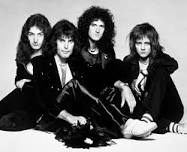

Queen
Banda britanica de rock formada en 1970 en Londres

Integrantes del grupo
Brian May
Freddie Mercury
John Deacon
Roger Taylor
Discografia
Grandes exitos de Queen
Año
Disco
1975
A Night at the Opera
1986
Kind of Magic
1989
The Miracle
"A kind o Magic" fue el álbum más exitoso
Sitio web Oficial
www.queenonline